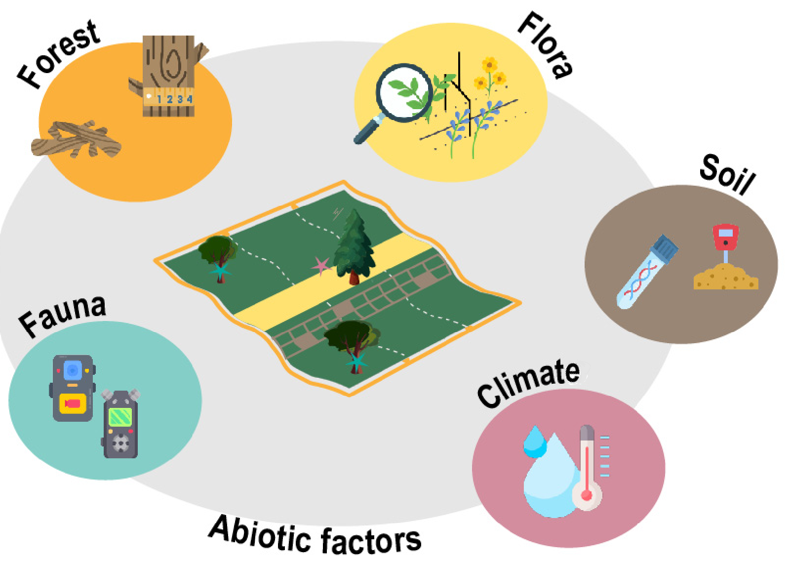
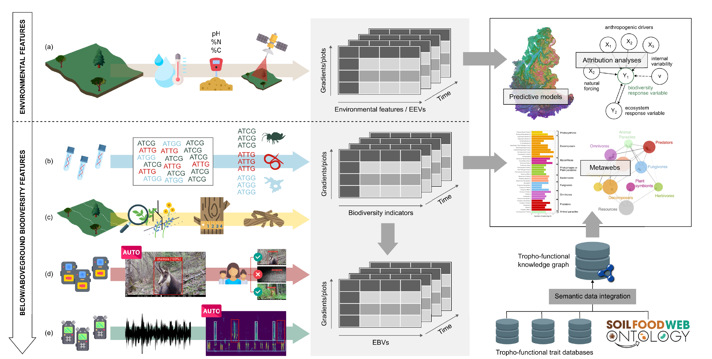

Alps, Corsica & Pyrenees
(~5 per gradient, on average)
Figures fetched live from orchamp.osug.fr (plot count estimated from the gradient count).
Most biodiversity monitoring targets a single taxon — birds, plants — because building a holistic view is hard. ORCHAMP takes the harder route: along replicated elevation gradients, it tracks the same 30×30 m permanent plots from soil microbes to large mammals, combining traditional field survey with environmental DNA, camera-traps and acoustic sensors. Elevation gradients make good sentinels — a shift we would only see in 50–70 years at a fixed point already shows up over a couple hundred metres of altitude today.
Plots are spaced roughly 200 m apart in elevation, four to nine per gradient, resurveyed on a rotating schedule averaging every 4–5 years. Started with five gradients in the French Alps in 2016, the network expanded into the Pyrenees in 2021, Corsica in 2023, Stelvio and Swiss National Park in 2025, and keeps growing.

Monitoring scheme. Each permanent plot is surveyed for forest structure, flora, fauna, soil and climate together — not as separate programmes. Source: Thuiller et al. 2024, Comptes Rendus Biologies.
Multi-modal monitoring
Vegetation & forest
Presence-absence plant surveys and pin-point transects along a standardised band, plus a full forest protocol: live and dead tree inventories, deadwood decay stage, and 47 types of tree-related microhabitats.
Environmental DNA
Soil biodiversity is characterised through eDNA metabarcoding using six markers — two universal (eukaryotes, bacteria) and four clade-specific (fungi, insects, oligochaetes, Collembola) — at a taxonomic resolution no manual survey can match.
Camera-traps
Two camera-traps per plot track large mammals. Images run through a two-step AI pipeline — MegaDetector isolates animals, DeepFaune classifies the species — with low-confidence detections reviewed by staff and citizen scientists.
Passive acoustic monitoring
Autonomous recorders capture one minute of audio every 15 minutes through the summer, producing acoustic indices and, increasingly, unsupervised acoustic OTUs — tracking birds, mammals and other calling animals without a species-by-species model.
Soil pits & physico-chemistry
Every plot has a dedicated soil pit: conventional analyses, organic matter characterisation (infrared spectroscopy, Rock-Eval pyrolysis) and mineral geochemistry (XRF), placing each plot within standard soil reference systems.
Microclimate & satellite time series
Hourly soil temperature and moisture loggers on every plot, combined with Sentinel-2 and Landsat time series (NDVI trends back to 1984) and climate reanalysis data, to separate microclimate from regional climate.
From sensors to knowledge
Every raw measurement and its metadata are collected and stored through a relational database developed at LECA, following FAIR principles (Findable, Accessible, Interoperable, Reusable). Large or specific datasets — eDNA, acoustic, camera — are held on their own dedicated storage. Processed data cubes and common indices are published for each plot and protocol through a public R-Shiny application, so anyone can query and download what they need without going through the raw files.
Soil biodiversity poses a particular challenge: eDNA returns thousands of taxonomically uneven sequences with no shared vocabulary to compare across studies. To make that data usable, the team built the Soil Food Web Ontology (SFWO) — formal, logical definitions for more than 160 trophic groups spanning soil taxa — and an ontology-based integration pipeline that assembles a knowledge graph linking trophic interactions and feeding habits across a dozen external data sources. Because the integrated data are "semantified" (tied to SFWO concepts), the pipeline can automatically reconstruct informative metawebs — food webs for a given plot or community — and reason over them, rather than requiring a human to hand-curate every interaction.

Data integration and flow of information. Environmental features (a) and multi-taxa biodiversity data — eDNA (b), vegetation and forest survey (c), camera-traps (d), acoustic sensors (e) — are organised into data cubes, used for predictive models and attribution analyses, and, for soil data, run through semantic integration against the Soil Food Web Ontology to build tropho-functional knowledge graphs and metawebs. Source: Thuiller et al. 2024, Comptes Rendus Biologies.
Explore the data
Browse ORCHAMP's plots, protocols and results, and query the data cubes directly from the programme's own website.
Full methodological details, the complete ORCHAMP consortium and funding are in Thuiller, W., Saillard, A. et al. (2024) ORCHAMP: an observation network for monitoring biodiversity and ecosystem functioning across space and time in mountainous regions. Comptes Rendus Biologies, 347(4), 223–247 — see the Publications page for the full reference.